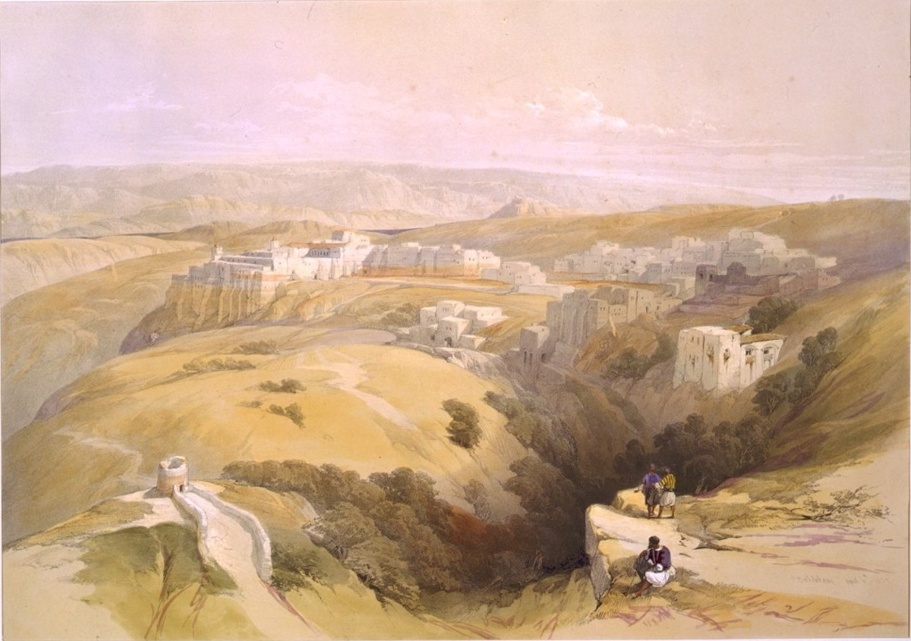

Miqueas 5 — La Traducción Mister

Miqueas 5:1. Roberts dibujó Belén como un pueblo de colina sobre una cresta, que es lo que el hebreo «pequeña para estar entre los millares de Judá» pone junto a la cuestión de su tamaño; el pueblo, la torre y los tres viajeros son del artista, de su viaje de 1839, más de dos mil quinientos años después del profeta. El cuadro muestra el lugar y nada de la promesa, y el gran conjunto de la izquierda es una iglesia y convento posteriores.

Notas del traductor — versículo por versículo
⚠ Numeración. Esta página sigue la numeración hebrea, en la que este capítulo empieza en lo que las Biblias en español de la estantería llaman 5:2, Belén. Su 5:1, el sitio y la vara sobre la mejilla del juez de Israel, es 4:14 en el hebreo, y cada versículo de aquí es uno menos que en el español: el versículo de Belén es 5:1 aquí y 5:2 en el español, y el último versículo es el 14 aquí y el 15 allí. Los números de versículo de esta página son los hebreos.
⭐ Belén Efrata. «Belén Efrata» está en este único versículo, con el nombre antiguo junto al nuevo (efrat): Raquel es sepultada «en el camino de Efrata — esto es, Belén» (Génesis 35:19, ya en estas páginas, y 48:7); la bendición de Rut es «que obres con valor en Efrata y hagas nombre en Belén» (Rut 4:11, ya en estas páginas); y David es «hijo de aquel efrateo de Belén de Judá» (1 Samuel 17:12, ya en estas páginas). «Pequeña para estar» está en este único versículo, y «los millares de Judá» está en cuatro versículos: 1 Samuel 23:23 (ya en estas páginas), este, y Zacarías 12:5 y 12:6; elef es un millar, y un clan que se contaba por millares. La RV 1909 dice «pequeña para ser en los millares de Judá», la RV60 «pequeña para estar entre las familias de Judá», la NVI «pequeña entre los clanes de Judá», la TNM 1987 «el demasiado pequeño para llegar a estar entre los miles de Judá» y la TNM 2019 «la que es demasiado pequeña para estar entre los clanes de Judá». Mateo 2:6 imprime la misma línea como «en ninguna manera eres la menor entre los gobernantes de Judá» (ya en estas páginas), con «menor» por el hebreo «pequeña».
⭐ De ti, a mí. «De ti saldrá para mí» está en este único versículo: el que sale es para Jehová, li, «para mí». Y «gobernante en Israel» está en dos versículos, este y 2 Crónicas 7:18, la promesa a Salomón, «No te será quitado varón que gobierne en Israel» (ya en estas páginas). La palabra es moshel, un gobernante, y el hebreo no tiene palabra para rey. La RV 1909 dice «de ti me saldrá el que será Señor en Israel», la RV60 «de ti me saldrá el que será Señor en Israel», la NVI «de ti saldrá el que gobernará a Israel», la TNM 1987 «de ti me saldrá aquel que ha de llegar a ser gobernante en Israel» y la TNM 2019 «de ti saldrá para mí el que será gobernante en Israel». La siguiente cláusula de Mateo, «un gobernante que pastoreará a mi pueblo Israel», no es de Miqueas: «tú pastorearás a mi pueblo Israel» está en dos versículos, 2 Samuel 5:2 (ya en estas páginas) y 1 Crónicas 11:2. Juan 7:42 pregunta por Belén, «la aldea donde estaba David» (ya en estas páginas).
⭐ Sus salidas. «Y sus salidas» está en este único versículo (motsaá), el sustantivo del verbo con que abre la línea: yetse, «saldrá», y motsa’otav, «sus salidas», son una raíz. «Desde antiguo, desde los días de olam» está en este único versículo (olam). La RV 1909 dice «sus salidas son desde el principio, desde los días del siglo», la RV60 «sus salidas son desde el principio, desde los días de la eternidad», la NVI «sus orígenes son de un pasado distante, desde tiempos antiguos», la TNM 1987 «cuyo origen es de tiempos tempranos, desde los días de tiempo indefinido» y la TNM 2019 «su origen se remonta a tiempos antiguos, a los días de mucho tiempo atrás». Si es un origen, una ascendencia que llega hasta los días de David, o una persona que sale desde los días de olam, el hebreo no lo dice.
⭐ Hasta que la que da a luz haya dado a luz. «El tiempo en que la que da a luz haya dado a luz» está en este único versículo; el hebreo no tiene hijo en él, y la NVI dice «hasta que tenga su hijo la que va a ser madre», donde la RV60 dice «hasta el tiempo que dé a luz la que ha de dar a luz» y la TNM 1987 «hasta el tiempo en que la que da a luz realmente dé a luz». Isaías 7:14 tiene la misma clase de figura con el participio, una joven que da a luz (ya en estas páginas). Quiénes son «ellos», a quienes entrega, el versículo no lo dice; la NVI dice «Dios los entregará al enemigo». Y «el resto de sus hermanos» está en este único versículo, que vuelven (shuv); la RV 1909 dice «el resto de sus hermanos se tornará con los hijos de Israel» y la TNM 1987 «los demás de sus hermanos volverán a los hijos de Israel».
⭐ Se levantará, y pastoreará. «y pastoreará con la fortaleza de Jehová» está en este único versículo, y «con la majestad del nombre de Jehová» está en este único versículo; el gobernante tiene a Jehová por su Dios. «Hasta los confines de la tierra» está en tres versículos: este, Zacarías 9:10 y el Salmo 72:8 (ninguno todavía en estas páginas). La RV 1909 dice «apacentará con fortaleza de Jehová, con grandeza del nombre de Jehová su Dios», la RV60 «apacentará con poder de Jehová», la NVI «los pastoreará con el poder del Señor, con la majestad del nombre del Señor su Dios», la TNM 1987 «hará pastoreo en la fuerza de Jehová, en la superioridad del nombre de Jehová su Dios» y la TNM 2019 «pastoreará con la fuerza de Jehová». La palabra siguiente es veyashavu, y sus consonantes pueden leerse «habitarán» o «volverán»: la RV 1909 dice «asentarán», la RV60 «morarán seguros», la NVI «Vivirán seguros» y la TNM 1987 «seguirán morando».
⚠ «Este será paz». «Y este será paz» está en este único versículo (shalom). El hebreo tiene zeh, «este», y shalom; no tiene «hombre» y no tiene «nuestra». Puede ser «este» o «esto», el estado de cosas que se describe a continuación. La RV 1909 dice «Y éste será nuestra paz», la RV60 «Y este será nuestra paz», la NVI «¡Él será nuestra paz!», la TNM 1987 «Y este tiene que llegar a ser paz» y la TNM 2019 «Y él traerá paz». Efesios 2:14 lo dice de Jesús, «él mismo es nuestra paz» (ya en estas páginas). El tiempo es «cuando entre en nuestra tierra», que está en dos versículos, este y el siguiente, y el asirio pisa nuestros palacios aquí y nuestro límite allí.
⭐ Siete pastores, y ocho. «Siete pastores» está en este único versículo, y «príncipes de hombres» está en este único versículo (nasikh). La forma es un número y el siguiente, como en «por tres transgresiones y por cuatro» (Amós 1:3, ya en estas páginas). La RV 1909 dice «siete pastores, y ocho hombres principales», la NVI «siete pastores y aun con ocho príncipes del pueblo», la TNM 1987 «siete pastores, sí, ocho adalides de la humanidad» y la TNM 2019 «siete pastores, sí, ocho príncipes de la humanidad». Los palacios son armenot: la RV 1909 dice «nuestros palacios», la NVI «nuestras fortalezas» y la TNM 1987 «nuestras torres de habitación».
⚠ Pastorearán la tierra de Asiria. «Y pastorearán la tierra de Asiria» está en este único versículo, con el verbo del versículo 3, ra’ah, pastorear; y «la tierra de Nimrod» está en este único versículo, el Nimrod de Génesis 10:8 de cuya tierra «salió a Asiria» (Génesis 10:11, ya en estas páginas). La estantería está dividida sobre el verbo: la RV 1909 dice «comerán la tierra de Assur á cuchillo», la RV60 «devastarán la tierra de Asiria a espada», la NVI «pastorearán a Asiria con la espada», la TNM 1987 «pastorearán la tierra de Asiria con la espada» y la TNM 2019 «Pastorearán la tierra de Asiria con la espada». El segundo sustantivo, bifticheha, es «en sus entradas» en la TNM 1987 («en sus entradas») y la TNM 2019 («en sus entradas»), mientras la RV60 dice «con sus espadas» y la NVI «con la daga». La línea «y él librará de Asiria» está en este único versículo.
⭐ Como rocío. «El remanente de Jacob» está en dos versículos, este y el siguiente (she’erit), y «en medio de muchos pueblos» está en los mismos dos; los dos versículos empiezan vehayah she’erit Ya’aqov. «Como rocío de Jehová» está en este único versículo, y «como lluvias sobre la hierba» está en dos versículos, este y Deuteronomio 32:2, donde la enseñanza cae como ella (ya en estas páginas; revivim). El rocío es el que «no espera al hombre», que está en este único versículo: viene de Jehová y no del esfuerzo de nadie. La RV 1909 dice «como el rocío de Jehová, como las lluvias sobre la hierba, las cuales no esperan varón, ni aguardan á hijos de hombres», la RV60 «las cuales no esperan a varón, ni aguardan a hijos de hombres», la NVI «que no depende de los hombres ni espera nada de ellos», la TNM 1987 «como chaparrones copiosos sobre vegetación, que no espera en el hombre» y la TNM 2019 «que no ponen su esperanza en el hombre».
⭐ Como un león. «como un león entre las bestias del bosque» está en este único versículo, «como un leoncillo entre los rebaños de ovejas» está en este único versículo, y «pisotea y desgarra, y no hay quien libre» está en este único versículo. El mismo verbo está en el versículo 5: allí vehitsil, «él librará», de Asiria, y aquí ein matsil, «no hay quien libre», del león. El mismo remanente es rocío y león, con las mismas palabras, en medio de los mismos pueblos. La RV 1909 dice «como el león entre las bestias de la montaña, como el cachorro del león entre las manadas de las ovejas», la RV60 «como el león entre las bestias de la selva», la NVI «como un león entre los animales del bosque, como un leoncillo entre las ovejas del rebaño», la TNM 1987 «y no hay libertador» y la TNM 2019 «que pasa, ataca y despedaza».
⭐ Tu mano será alzada. «Tu mano será alzada sobre tus adversarios» está en este único versículo; el discurso se vuelve a «tú», singular, y el verbo puede ser una afirmación o un deseo. La RV 1909 dice «Tu mano se alzará sobre tus enemigos, y todos tus adversarios serán talados», la RV60 «y todos tus adversarios serán destruidos», la NVI «Levantarás la mano contra tus enemigos y acabarás con todos tus agresores», la TNM 1987 «Tu mano estará muy por encima de tus adversarios» y la TNM 2019 «Tu mano será alzada por encima de tus adversarios». «Serán cortados» es la primera de cinco formas de karat en los versículos 8–12.
⭐ Cortaré. El verbo es hikhrati, «cortaré», cuatro veces, en los versículos 9, 10, 11 y 12, tras yikkaretu, «serán cortados», en el versículo 8. «Y cortaré tus caballos» está en este único versículo, y «y destruiré tus carros» está en este único versículo. El rey de Deuteronomio no debía multiplicar caballos (Deuteronomio 17:16, ya en estas páginas). Jehová habla aquí en primera persona, tras «dice Jehová» en el versículo 9; el Nombre está escrito cuatro veces en el capítulo, en el versículo 3 (dos veces), el 6 y el 9. La RV 1909 dice «haré matar tus caballos de en medio de ti, y haré destruir tus carros», la NVI «exterminaré tu caballería y destruiré tus carros de guerra», la TNM 1987 «ciertamente cortaré tus caballos de en medio de ti, y destruiré tus carros» y la TNM 2019 «acabaré con los caballos que hay en medio de ti y destruiré tus carros».
⭐ Ciudades, fortalezas, hechicerías. Las ciudades se cortan y las fortalezas se derriban, y luego las cosas de la mano: «hechicerías», cuyas consonantes están en cinco versículos, entre ellos Éxodo 7:11, de los hechiceros de Faraón (ya en estas páginas); «y adivinos» está en este único versículo (onen, kashaph). La RV 1909 dice «destruiré de tu mano las hechicerías, y no se hallarán en ti agoreros», la NVI «Pondré fin a tus hechicerías y no tendrás más adivinos», la TNM 1987 «no continuarás teniendo practicantes de magia» y la TNM 2019 «Acabaré con tus prácticas de hechicería».
⭐ Imágenes, columnas, Aserim. «Tus imágenes talladas y tus columnas» está en este único versículo (pesel), una pareja que Levítico 26:1 prohíbe con su propia grafía (ya en estas páginas), y «y no te inclinarás más ante la obra de tus manos» está en este único versículo. «Tus Aserim» está en este único versículo (aserá; Deuteronomio 16:21, ya en estas páginas). La RV 1909 dice «tus esculturas y tus imágenes» y «arrancaré tus bosques», la RV60 «arrancaré tus imágenes de Asera», la NVI «Arrancaré tus imágenes de Aserá» y la TNM 1987 «desarraigaré de en medio de ti tus postes sagrados». Para las imágenes, la NVI dice «tus ídolos y con tus piedras sagradas», la TNM 1987 «tus imágenes esculpidas y tus columnas» y la TNM 2019 «las imágenes esculpidas y las columnas sagradas».
⭐ Venganza sobre las naciones que no han escuchado. «Y ejecutaré con ira y con furor» está en este único versículo, y la última cláusula es asher lo shame’u, «que no han escuchado». La RV 1909 dice «haré venganza en las gentes que no escucharon», la RV60 «en las naciones que no obedecieron», la NVI «de las naciones que no me obedecieron», la TNM 1987 «sobre las naciones que no han obedecido» y la TNM 2019 «de las naciones que no han obedecido». La raíz es la de la primera palabra del capítulo siguiente, shim’u, «Oigan, por favor» (Miqueas 6:1, ya en estas páginas).
Patrones que vale la pena llevar adelante
Dónde esta traducción mantiene las palabras exactas y distintas: «Belén Efrata» con los dos nombres; «gobernante» para moshel, sin rey; «salidas» para motsa’ot; «olam» se deja como está; «pastorear» para ra’ah en los versículos 3 y 5 por igual; «este será paz» sin «hombre» y sin «nuestra»; «el remanente de Jacob» para las mismas dos palabras de los versículos 6 y 7; «librar» para la raíz única de los versículos 5 y 7; «cortar» para karat; «Aserim» para asherim; «Jehová» para el Nombre, escrito cuatro veces: versículo 3 (dos veces), versículo 6 y versículo 9.
Ecos pagados. Mateo 2:6; Juan 7:42; Génesis 35:19, 48:7, 10:8 y 10:11; Rut 4:11; 1 Samuel 17:12 y 23:23; 2 Samuel 5:2; 2 Crónicas 7:18; Isaías 7:14; Efesios 2:14; Amós 1:3; Deuteronomio 32:2, 17:16 y 16:21; Éxodo 7:11; Levítico 26:1; Miqueas 6:1.
Ecos plantados. Zacarías 9:10, 12:5 y 12:6; Salmo 72:8; 1 Crónicas 11:2. Ninguno de estos está todavía en estas páginas.
⚠ Una nota sobre el orden: Miqueas está en estas páginas en los capítulos 1, 5 y 6, elegidos por lo mucho que se lee un pasaje y no en orden. El hilo secuencial no cambia: el siguiente en la secuencia es Miqueas 2.